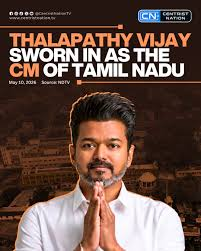

The newly founded TVK outperformed exit polls to emerge as the single largest party in both seat share and popular vote in a hung assembly, becoming the first party led by an actor-turned politician to do so in its debut Assembly election since 1977, a feat achieved by M. G. Ramachandran.15 ministers from the outgoing Stalin cabinet were defeated in their respective constituencies.So the new TamilNadu CM C.Joseph Vijay is there to rule our state.
One of the biggest highlights of the 2026 election was the entry of actor Vijay into full-time politics through his party TVK. Vijay already had a huge fan following because of his successful film career, and many young people supported him strongly. During the campaign, Vijay spoke about education, employment, corruption-free governance, development, women’s safety, and support for poor families. His speeches attracted huge crowds in many districts. Many people believed that his party brought a fresh change to Tamil Nadu politics. TVK quickly became one of the strongest competitors in the election.
The DMK, led by Chief Minister M.K. Stalin, also campaigned strongly across the state. The party focused on the achievements of the previous government, welfare schemes, women’s rights programs, educational support, healthcare projects, and infrastructure development. DMK leaders said that they had worked hard for the people and requested voters to give them another chance to continue their development plans. The party had strong support in several districts and remained one of the major political forces in Tamil Nadu.
The AIADMK also worked hard during the election campaign. Party leaders visited many areas and spoke about the legacy of former Chief Ministers M.G. Ramachandran and J. Jayalalithaa. AIADMK promised new welfare schemes, job opportunities, and better governance. The party tried to regain the support it had lost in previous elections. Supporters of AIADMK believed that the party still had a strong base among many voters.
Election campaigning in Tamil Nadu was very active both online and offline. Social media platforms such as YouTube, Instagram, Facebook, and X became important tools for political communication. Political parties shared videos, speeches, posters, and advertisements to reach young voters. Television channels and newspapers also covered election news daily. Public discussions about politics became common in homes, colleges, tea shops, offices, and social gatherings.